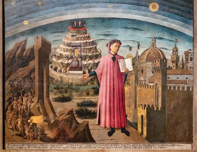
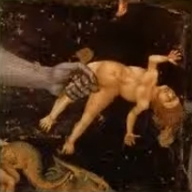
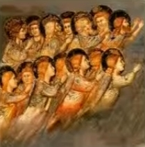
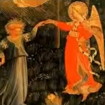

| HIS LIFE | |||
|
|||
| HIS WORKS | |||
|
|  |
| Portrait of Dante Alighieri,
the city of Florence and the allegory of the Divine Comedy by Domenico
di Michelino (1465) The poet, presenting his open work, is standing before the symbolic scenery of the Divine Comedy: Hell is on the left, Paradise is in the background, to which lead the seven terraces of Purgatory; the city of Florence is on the right. |
The Divine Comedy This poem was written by Dante Alighieri during his exile between 1304 and 1321, or to quote Dante: "Midway through our life's journey / I found myself in a dark wood / For the straight way was lost." This occurred 700 years ago, the year of the great jubilee in Rome, decreed by Pope Boniface VIII. Dante was 35 (half of life's journey according to the criteria of the time), and it was in spring (Easter time) in the year 1300 that Dante undertook his journey into the hereafter. Entitled Comédia by its author (in relation to the work, since the ending is happy but the beginning is not), and named Divina Commedia by a Venetian publisher, Ludovico Dolce, Dante's masterpiece (started around 1304 and finished around 1321) comprises 14 233 verses, composed of triplets (tertiary rhyme), grouped into 100 cantos divided into three parts:
This chronicle soon became famous. The ordinary people, the craftsmen of Tuscany, learnt Hell off by heart, and later during his distressing exile, the enlightened Princes summoned Dante to hear him talk about what he called the sacred poem in Paradise. The Florence of Lorenzo the Magnificent in the 15th century dedicated a true cult to Dante. Leonardo da Vinci, Raphael and Michelangelo claimed that Dante was their master and Botticelli shut himself away for 10 years to illustrate each of the 100 cantos. In the 16th century, Francis I and his sister Marguerite founded a Dantesque academy where the Comedy was read every evening. Long after his death, Dante's name was engraved by Paul VI in Florence's baptistery where he was christened. Jorge Luis Borges, in "Nine Dantesque Essays", gave a very appealing commentary on Dante's work. Of the hundreds of characters in the Comedy, he retained four: Ulysses, Ugolino of Pisa, Francesca and Beatrice. Dante, heading for Paradise, works on the most Christian book ever penned by a human hand, and according to Borges, the awareness of embarking on a danger-fraught adventure that would leave him wide open to his enemies' vengeance enabled Dante to identify with Ulysses. Dante listens to the adulterous Francesca's tale with infinite sympathy instead of rejecting her, as Borges believes that Dante admires and envies the cursed lovers, Francesca and Paolo, condemned to swirl endlessly in the flames, because theirs was requited love - such was not the case for Dante and Beatrice. The work is unusually complex and embraces everything that could be contained inside the human mind and which struck Dante's contemporaries by its youthful, vigorous and forthright language. The structure of the comedy is clearly based on the number 3, which expresses the Holy Trinity, and the number 10, which is a perfect number (Beatrice arrives in canto XXX of Purgatory and pronounces Dante's name in verse 73). It tells of a fantastic journey through the hereafter during holy week in 1300 by Dante himself, lost midway through his life's journey in the dark wood of sin and saved from danger by the blessed Beatrice's intercession and accomplishing a life-saving pilgrimage in the next world, guided first by Virgil (the great Roman poet who symbolised human reason) through Hell and then Purgatory, and then by Beatrice through Paradise (epitomising divine knowledge). Dante's journey has an allegorical meaning and represents the path that man must follow to escape earthly passions and reach the inspiration of moral freedom and faith, a path that leads from instinct and ignorance to the awareness of truth and salvation. Dante presents his conception of the hereafter by means of a supernatural journey leading in turn through Hell, Purgatory and Paradise. After witnessing various mystical processions and phantasmagorical metamorphoses, Beatrice appears before Dante upon entering Paradise, while Virgil slips away discreetly. He continues his journey with Beatrice by ascending to Paradise, represented according to the theories put forward by Aristotle and Ptolemy, and comes face to face with the ineffable vision of God with Saint Bernard as his next guide. The Divine Comedy ends after philosophical knowledge has been fully integrated into the divine truth, love has been elevated to the status of principle of all good and all evil, and political problems have been resolved through the doctrine of the empire's universal and eternal legitimacy. The Divine Comedy falls within the long line of visions of the hereafter and devotes a large place to the Graeco-Latin tradition. The traveller in the hereafter is surrounded by poets and has a poet's preoccupations. The poem is written as a first-person narrative, but Dante's name is only mentioned once by Beatrice. The prismatic structure of the speaking "I" is unprecedented and anticipates modern literary research. Dante is the subject of his poem; he is everywhere, but he is not the subject matter. We cannot even give an oversimplified image of the world in the Divine Comedy, but we can outline the order that rules over the description of the three kingdoms of damnation, penitence and beatitude. Hell is home to a moving force, Purgatory a more piercing emotion and Paradise the miraculous triumph of the imagination. |
|
Hell  Of the three canticles in the Divine Comedy, Hell is the most widely known and the most popular. Hell, situated beneath Jerusalem, is presented as a series of nine concentric circles that become increasingly narrow, the closer Dante gets to the centre. The damned are divided up according to Aristotle's classification of sins (the first circle, Limbo, containing the unbaptised dead, is followed by the lustful, the gluttons, the greedy, the wasters, the wrathful and the slothful; heretics are punished in the 6th circle, the violent in the 7th circle, the fraudulent, seducers and flatterers in the 8th circle, the traitors in the 9th circle with Lucifer, where the circles are also divided into zones). Virgil and Dante descend the circles in Hell one by one. Storms, ice, fire, cruel demons - the deeper one goes into sin, the closer one gets to Lucifer and the greater the suffering. Hell contains the most well-known cantos and famous episodes, such as Francesca da Rimini (canto V) who died for her passionate love affair, with whom the romantics of the 19th century identified (Dante and Beatrice are not the only noteworthy couple in the Divine Comedy). The 2nd circle of Hell, containing the lustful and carnal sinners, features Francesca and Paolo, embroiled in a tragedy that is traditionally placed in 1275. Francesca da Rimini is married to Giovanni Malatesta, but she is in love with her brother-in-law, Paolo, who returns her love. Giovanni surprises the lovers in each other's arms and murders them. When she meets Dante, Francesca agrees to tell how her love grew: "One day we were reading for our delight / Of Launcelot, how Love did him enthral / Alone we were and without any fear / Full many a time our eyes together drew / That reading, and drove the colour from our faces / But one point only was it that o'ercame us / When as we read of the much-longed-for smile / Being by such a noble lover kissed / This one, who ne'er from me shall be divided / Kissed me upon the mouth all palpitating / Galeotto was the book and he who wrote it / That day no farther did we read therein." Several painters, such as Ingres, have often captured this scene. Farinata degli Uberti (X), Pier della Vigna (XIII), Brunetto Latini (XV), Guido Da Montefeltro (XXVIII), Ulysses, who told Dante about his final, fateful journey beyond Hercules' Pillars (i.e. beyond the authorised limits of human knowledge), and the enigma of Count Ugolino, victim of a cruel archbishop and possible desperate devourer of his own children, are just some of the characters lining Dante's path. Virgil has to climb the fur of the three-headed Lucifer, imprisoned in the ice, to escape hell with Dante clinging on (harrowing episode where Dante sees Judas, the ultimate sinner, already half swallowed head-first by Lucifer's central red head, and Brutus and Cassius, guilty of treason against the Roman Emperor Caesar, their feet sticking out of the mouths of Lucifer's white and black side heads). Virgil has to call on all his power to tear Dante from the pity that he feels for these tormented souls. |
|
Purgatory  Purgatory, located on the opposite side of the world from Jerusalem, in the southern hemisphere, looks like a sugar-loaf mountain. After crossing the circular shore at its base, the travellers make their way up the mountain via a steep slope, ante-purgatory, a waiting area where sinners atone for both political and religious negligence. This is where hope is reborn; lust, wrath, envy and gluttony have brought a humanity here that did not become irrevocably hardened through its faults; this is also where repentance puts the sinners on the path to salvation. They then ascend the seven circular terraces carved into the mountainside, each corresponding to one of the seven deadly sins. Purgatory is populated with political invectives with Cato of Utica, he meets Manfred, the unfortunate heir to Frederick II, the ferocious moral description of the valley of the Arno (XIV), and Hugh Capet's indictment against the French monarchy (XX). At the summit of the mountain, Dante encounters Beatrice, ready to guide him through Paradise and who says Dante's name for the first and only time, while Virgil slips away. The Beatrice that was once a tenderly beloved mortal now appears with quite a different face: now disembodied, she becomes an allegory, the symbol of truth, a mediating figure like the Virgin, without whose help the sinner Dante will be unable to ascend to the kingdom of heaven. |
|
Paradise  The crux of Dante's major project was actually Paradise - the aim being to show a triumphant Beatrice in the joy of Paradise and to "say of her what was never said of any other woman". Paradise is therefore presented as a form of praise for a woman. It also allows Dante to state his religious beliefs. From the moon to the Empyrean Heaven, via the planets and stars, Paradise comprises nine spheres, including the Celestial Empire where God resides, with each sphere corresponding to a degree of bliss. The happiness of the Chosen ones can be measured by the intensity of the light, joy and love that whirl them around in perpetual motion. Paradise never stops moving, and the traveller can only detect his own movement by Beatrice's increasingly beautiful face. This place of perfect happiness is unbearable, because the reigning emotion, energy and perception are excessive. An inner metamorphosis is required to bear the beauty of the Chosen one and the splendour of the Music and Light. Describing Paradise is tantamount to surpassing the human element in words. All of Paradise is based on the impossible task of describing Paradise. Dante particularly encounters Justinian, Charlemagne and Saint Bernard. The greatest figures in Christendom are there to greet Dante, a potential blessed one. Dante's account includes the eulogy delivered by Saint Francis and Saint Dominic, finishing with the harsh denunciation of their unworthy disciples, Dante's meeting with his great-great-grandfather Cacciaguida (just like Aeneas meets his father Anchises in Virgil's Aeneid) who confirms the length of their lineage and denounces the moral and political decadence in modern-day Florence. Dante will be subjected to three tests; by Saint Peter concerning faith, by Saint James concerning hope, and by Saint John the Evangelist concerning charity. After this celestial procession, Beatrice makes way for Saint Bernard for the final stage. Saint Bernard says a prayer to the Virgin for Dante, before he gazes into the divine light, the last cantos of Paradise, in the most abstract and the purest light rarefaction (O Light Eternal fixed in Itself alone). Dante cannot find the words to describe the ecstasy that delighted him. These illustrious passages are committed and are not unrelated to the contemporary political reality (local struggles, dynastic conflicts, weaknesses and dishonest compromises of the Church, the fruitless attempts to restore imperial power in Italy with Henry VII of Luxembourg). As the Divine Comedy progresses, the political landscape widens from Florence to Tuscany, from Tuscany to Italy, from Italy to Europe, and from Europe to the whole world. Nowhere in his work does Dante give his surname, or the name of his father, mother and children, and note that he is unfamiliar with the vanity of autobiography. The features given to his character are those that make him highly representative of all of mankind in its quest for earthly happiness. The world described by Dante may come across as a long ago world due to its historical and doctrinal content, but it proves to be very present-day on account of its moral substance, its harrowing uncertainty on the brink of the future, representing an omen for Dante of an imminent end of time, due to the planetary dimension where it takes place, due to the poetic language of unlimited understanding. Dante's work needs to be read in its entirety without stopping at choice sections to understand the tearing of the soul, the anxious wait for great hopes and superhuman elation. The general intention behind the Divine Comedy is a man's journey towards God, ending with a vision of the Trinity. The teaching of the poem is aimed at everyone and is in keeping with the scholastic philosophy and theology of the 12th and 13th centuries. It is not a theological work, even if Dante happens to be a Christian poet. Dante is also the first to incorporate the Church in the future of human societies and conceive of a story about the Church with episodes of glory and periods marked by crisis. He is critical and even lets loose a torrent of abuse against the popes (the episode in his life with Boniface VIII) and forcefully reminds of the absolute asceticism of the primitive Church. Dante loves Florence and never renounced his adhesion to a Guelph community that drove away the Ghibellines. However, Dante sometimes believes that "good living" in society and earthly bliss are just as important as eternal happiness, meaning that he is far from the dominant Augustinian tradition at the time. |